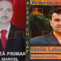

Ce înseamnă neprost? “Deştept eşti atunci când erai pe zero şi ai ajuns la plus, iar neprost eşti atunci când erai pe minus şi ai ajuns la zero”, explică membrii grupului de umor “Sector 7″, cei care au lansat termenul, odată cu videoclipul Cărţi: te fac neprost. Deşi puţin probabil, dacă încă n-aţi văzut cum [...]
Am descoperit faptul că în media românească sunt foarte multe pagini, articole, web-site-uri adresate femeilor, discriminând oarecum, pentru PRIMA DATĂ sexul masculin. Aşa debutează prezentarea proiectului Academia Bărbaţilor, o revistă online care insistă să demonstreze că masculinitatea asta nu-i aşa simplă cum crede lumea. Prima dată?! Dacă ignorăm cu desăvârşire miile de site-uri care cer [...]

Unii oameni detestă liniştea. Când se lasă tăcerea încep le ţiuie urechile, îi ia cu furnicături pe sub piele, simt fierbinţeli pe ceafă şi ameţeli la nivelul neuronului. Se apucă să bată darabana, să joace Angry Birds pe telefonul mobil, să îşi strige în gura mare simpatia pentru echipa de fotbal favorită sau să urle [...]

Maşini care vorbesc între ele şi îşi avertizează şoferii asupra potenţialelor coliziuni. Aşa va arăta traficul în viitorul apropiat. Cel puţin acolo unde există drumuri practicabile. Tehnologia de comunicare V2V (vehicle-to-vehicle) coboară în stradă. Guvernul Statelor Unite plănuieşte să lanseze, pe parcursul unui an, un test în condiţii reale de trafic al tehnologiei V2V, implicând [...]

Dacă vreţi să înţelegeţi cum îşi omoară statul român cloşca cu puii de aur, uitaţi-vă la Transgaz Mediaş (TGN), companie a cărei perspectivă de rating a fost coborâtă astăzi. Transportatorul de gaze a obţinut în ultimii 4 ani profituri din ce în ce mai mari, pe fondul creşterii afacerilor. Ce are agenţia Standard & Poor’s cu [...]
Zadarnică fu încleştarea naţională cu aspect de scremere şi mireasmă de mititei gratuiţi sfârâind pe grătarele politice. Degeaba zămisliră candidaţii vechi şi noi discursuri sforăitoare despre schimbare. Inutilă se dovedi întreaga manea a campaniei electorale româneşti, presărate cu dezbateri sterile şi mesaje mobilizatoare cu iz stahanovist. Unele lucruri, pur şi simplu, rămân neschimbate. Departe de [...]

“Eu sunt o persoană credibilă în oraşul Mangalia pentru că lucrez. Sunt apolitic. Am voturi în chiloţi pentru că am fost agresat”. E declaraţia plină de tupeu a unui alegător constănţean care şi-a ticsit lenjeria intimă cu zece buletine de vot deja ştampilate, apoi a dat să plece. Prins cu inscripţia “votat” în urna intimă, electorul [...]
Dându-şi seama că el însuşi n-ar avea nicio şansă la examenul de Bacalaureat în condiţiile actuale (vezi aici de ce), Liviu Marian Pop, ministrul agramat al Educaţiei, Cercetării, Tineretului şi Sportului a declarat că: Începând cu anul viitor, supravegherea video a candidaţilor ar putea fi eliminată. În consecinţă, vom reveni la tradiţionala amiciţie între elev şi [...]
“Minţiţi, furaţi/Juraţi strâmb sau înşelaţi/Numai bani să încasaţi”. Cu acest slogan politico-electoral şi-a încheiat politicianul-paradox Dan Diaconescu Preşedinte campania permanentă pentru alegerile locale. În virtutea strămoşescului strigăt de luptă “ba pe-a mă-tii“, omul-partid care nu e membru de partid şi-a îndemnat susţinătorii să adune cu două mâini toate pomenile electorale care le ies în drum [...]

Focul din inima libidinosului primar al Constanţei, Radu Mazăre, a ajuns pe panourile publice destinate ghinioniştilor turişti străini rătăciţi pe litoralul românesc. Traducerea publică, oficială, a formulei “No Naked” este…”Focul interzis“. În mod evident, e vorba despre focul din pantaloni, aceasta fiind sigura legătură între nuditate şi flăcări. Indicatoarele amplasate la Mamaia, în preajma unei [...]

Din categoriile “domnişoară parţial virgină”, “vietăţi oarecum mamifere”, “armată relativ învingătoare”, “cât de cât concediat” şi “mortul aproape decedat”, Jurnalul Naţional prezintă următorul titlu, desprins din înţelepciunea jurnalistică de tip “Jana n-a murit, Jana se transformă”: Cum a fost tratat Lincoln după ce a fost asasinat? Regeşte, probabil. Răposat fiind, o fi fost tratat cu [...]

Dacă la locul de muncă tot românul e obligat să se ia după şefi, atunci în timpul liber el preferă, de obicei, să se ia după … toţi ceilalţi. Când vine vorba de week-end, nici nu concepe să şi-l petreacă altundeva decât la mall, la grătar sau, dacă e bucureştean, în Centrul Vechi. Nu contează [...]